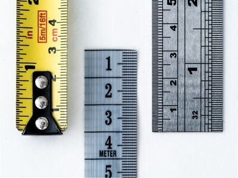

This is going to sound hard.
But, if programming didn't seem overwhelming to you.
If it did not seem hard, then you are doing it wrong.
Programming is hard.
It takes a long long time to truly get good at it.
But do you know why we programmers do it?
Because we LOVE programming. It is so freaking cool!
You are creating something that can last forever, that fits your imagination, shows off how smart you are, and one day can make you a lot of money.
It is an amazing craft that builds character, makes you smarter and gives you purpose...
The Common Developer
I have seen countless developers who earn their degree in Computer Science and believe they have learned programming.
Photo by Susan Weber
At the same time I have met young programmers who only have a high school degree, and are more proficient coders than PhD professors (in Computer Science)
And, it kinda makes sense.
Programming is not something that is taught as much as it is something that is trained.
Trained to oneself.
Many developers believe by just enrolling in a Computer Science program they will learn programming.
I have seen it though.
Students who get their Bachelors and Masters in Computer Science and they don't know how to create a class in any programming language upon graduating.
The difference between a student who does not learn coding while in college and the one that does, is simply their self-study.
Photo by Iewek Gnos
Passive learning, going to class, passing all your homework, writing papers & pseudocode is not the way to learn programming.
Don't get me wrong, a Computer Science program can be the best thing for you. Especially if you are learning to code while taking courses.
What Do You Mean Learning to Code?
But, what does learning to code mean to most people?
Typically, it means becoming an autonomous coder.
This means, are you able to solve 90% of problems?
A problem would be 1 of 1000 pieces of a larger project.
If you want to build a website, can you divide it into 1000 steps and solve 900/1000 with just your notes, AI helper and the internet?
Photo by Markus Winkler
With this goal of becoming a autonomous programmer you must also pick a niche.
The true way to word this for your goals is, "can I solve 90% of problems in a chosen niche?"
That is a good and worthy goal to strive for.
It is specific and solid enough to imagine and strive for.
So, lets rephrase the whole question:
"How long does it take to become an autonomous programmer in one niche?"
Ah, there we go, much better.
This I can answer and this is what most people mean.
How Long Does It Take?
If we answer this question we have to separate the programming journey into three parts
- Programming fundamentals
- The language
- A niche
Learning just the programming fundamentals and the language can take 1-5 years depending on a few factors.
Be encouraged though!
Photo by Alex Shute
If you want to be a top 10% developer in a niche I am explaining how it is done and how long it takes.
The way I always will and have explained programming is to gather more complete knowledge of your topic.
Though this picture of time and effort is optimistic. There are many things that happen in between. This means many many hours of (hopefully fun) learning.
The two biggest factors on your learning speed
The two indicators of how long it will take to learn, is #1 your passion.
Passion makes you immune to fatigue.
It allows you to write code 6+ hours a day and lay in bed with a smile.
It creates a perseverance and long-term commitment.
#2, your current intellect.
Differing intellect makes two otherwise equal people learn at dramatically different speeds.
The slower one may take 1.5 years to learn a language and fundamentals while the faster one may take 6 months for the same.
Photo by Fab Lentz
Be encouraged. By the end of the 1.5 years for the slower person, intellect will improve a LOT.
Often the smart ones quit as they did not build character. Everything was just too easy for them.
Always cultivate and protect your passion.
Programming fundamentals
This is the shortest phase of becoming an autonomous programmer.
You should dedicate special time to learning the basics.
After that special time, it will take time while coding to truly grasp everything.
The fundamentals bleeds into learning a language
Photo by Our Life In Pixels
You start with a good 2-12 hours learning how Computer Science is put together in some introduction to programming course. Then continue learning fundamentals in your chosen language.
This can be with or without university.
If I had to put a timeline on it, it would take average 1 year at 3 hours a day.
More or less is added depending on passion and intellect of course.
The language
Your first language will take a long time.
The reason is because you are learning three different things at once.
You are...
- Learning programming fundamentals
- Learning a whole language
- Learning how to learn to code
All three at once!
Once you finish tackling these individual parts every learning project in the future will be easier.
Photo by Thao LEE
For the first language and fundamentals it should take 1-2 years of your programming journey at 3-4 hours per day.
If you choose a tough language like C++ to start with though, it can take 2-4 years for the first language.
Here are some time spans for some example languages...
- Python: 1-2 years
- Javascript: 1-2 years
- C#: 1.5-3 years
- Java: 2-3 years
- C++: 2-4 years
The reason for these differences is their features.
For example C++ has all the features of programming. It is the programming language of programming languages!
While Python has many less features and will lead to a more incomplete knowledge.
Python will be fast.
And, C++ will give you a ridiculously deep understanding of programming by the time you become an autonomous programmer with it.
That is why I encourage learning C++ just as much as I encourage Python.
This is if you take a direct path and dedicate time every day.
If you take a good programming fundamentals college class and Udemy course, you can speed this up quite a bit.
But, at that point you actually won't be spending less time learning to code.
Photo by Alexander Grey
You will be spending more time.
The class will keep you accountable to putting in a minimum number of hours. On top of that you are learning on your own.
In addition, if you are taking a college class, stick to the programming language of that class.
It is totally valid to switch languages semester by semester for the sake of your courses.
It is better that way in university.
This is the picture I want to portray to you.
This is how it is done effectively.
Passionate programmers often commit to this timeline automagically without even thinking about it.
It is the actual time it takes to become a fast growing developer.
A niche
Every niche is different. Each takes a different amount of time and effort.
Photo by William Warby
I will give you some time spans so you can imagine how long it will take to become autonomous. Remember, these are arbitrary but represent my experience with the niche.
Also, these are AFTER learning the core language well. Here is a list of niches with some time spans:
- Game development: 3-12 years 3 hours per day
- Web development: 1-5 years 3 hours per day
- GUI/Desktop development: 6 months-3 years 3 hours per day
- Graphics programming: 5-20 years 3 hours per day
- Machine learning: 3-12 years 3 hours per day
This should provide some clues on the differences and time frames. You add up 1-5 years with the fundamentals and language then the niche.
For example, if you dedicated your life to web development, it can take 1 to 3 + 1 to 5 years. So, web development can range from 2-8 years at 3 hours per day.
This is if you do it the right and complete way.
At the end of it all you will be a total chad at the niche and show off those programming muscles, look at you...
Anywho, I hope you learned something...
Happy coding!
Resources
Pick a first language: How Should I Pick a Language to Start Coding Like a Superstar?